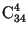

30 people vote on five proposals. In how many ways can the votes be distributed if everyone votes only for one proposal and only the number of votes cast for each proposal is taken into account?
The problem is equivalent to the problem of placing 30 balls into five boxes. See problem number 30717 b).
Nothing to translate.
 = 46,376 ways.